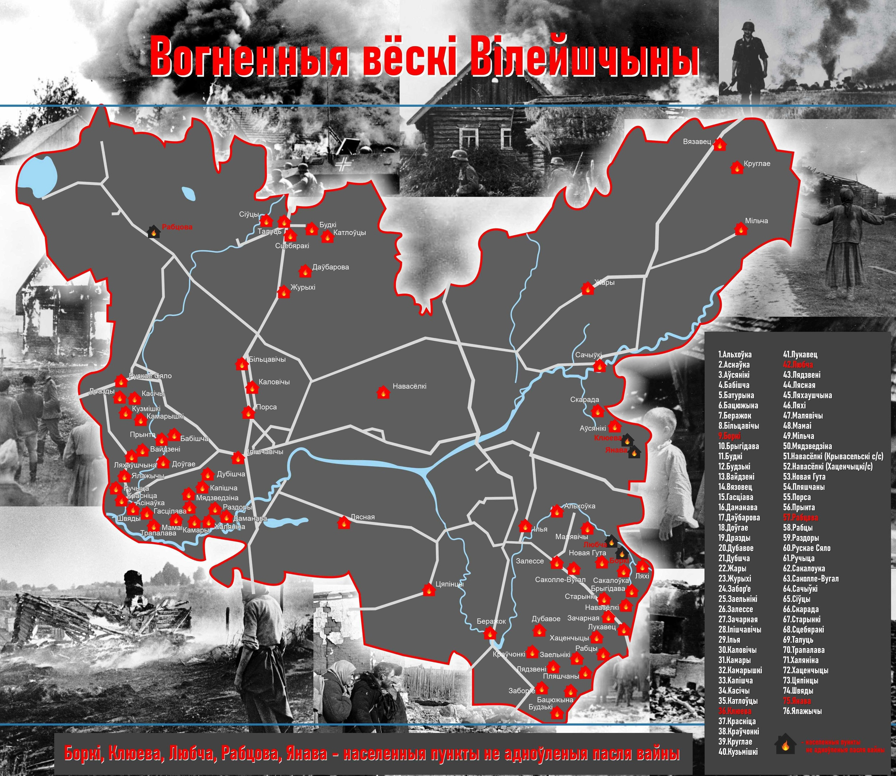

22 июня 1941 года Германия без объявления войны напала на Советский союз. Вилейский район был полностью оккупирован немецкими войсками 25 июня 1941 года, и оккупация продлилась более трёх лет – до июля 1944 года. Нацисты включили Вилейский район в состав территории, административно отнесённой в состав рейхскомиссариата «Остланд» генерального округа Белорутения.